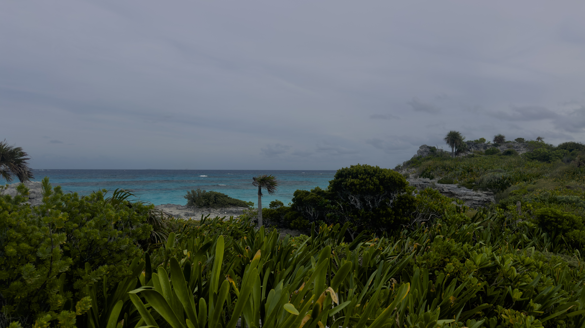
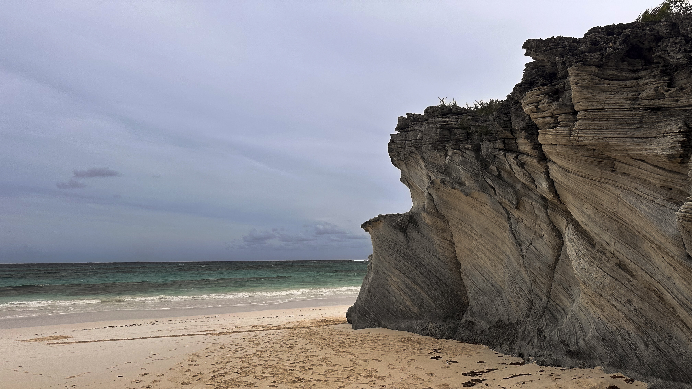
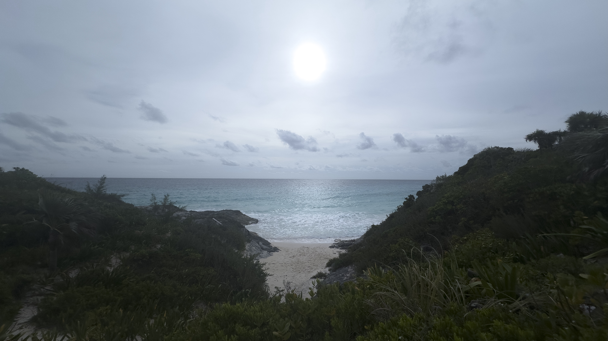

Photography
Surya Sanjay
Below is a list of curated photos I’ve taken over the years. They will (most likely) all be of natural landscapes or architecture.
28 February 2024

28 February 2024

27 February 2024

26 February 2024

24.614921, -76.14575225 December 2023
A long, almost two-mile trek from a shady parking lot in South Eleuthera led us to this magnificent patch of land. It is near a place called Lighthouse Beach, and it is one of the most untouched pieces of land I’ve set my bare feet on—reefs are just a ten-meter wade from dry sand. Go here soon before the reefs start to recede! Disney is building a resort here as I’m writing this. 
24.615248, -76.14567425 December 2023
The sand here is soft and a bright white color. Looking out into the distance, we could see what looked like either a cruise ship or an oil tanker. We didn’t expect to see anyone else here, since it was Christmas day, but surprisingly about twenty people were walking back across the beach as we were heading over. 
24.615070, -76.14595625 December 2023
This was the final attraction in the trail—Lighthouse Beach—a small cove with a steep, sandy entrance. There were a few rock formations on the north side of the beach, where some tide pools had formed. My brother and I searched for any signs of life, but all we could find was a large, nearly intact conch shell of a vibrant pink shade. 
39.63964, 106.394825 June 2023
After presenting at the SB3C Conference, a member of my lab and I decided to go on a short hike, and we caught a beautiful panoramic glimpse of Vail in the summer. What struck me the most about the village was how similar it looked to pictures I’d seen of Switzerland.

39.857349, -4.01869425 June 2022
After getting off a one-hour long bus ride from Madrid, we walked under the beating sun to the top of the ‘city on a hill.’ This was the first place we went, the Alcázar, or fort. Toledo truly is a fairy-tale city, but I wish it was slightly cooler when we went; all I remember is the heat.

Navigation
Built using tufte-css and the
Nord palette.